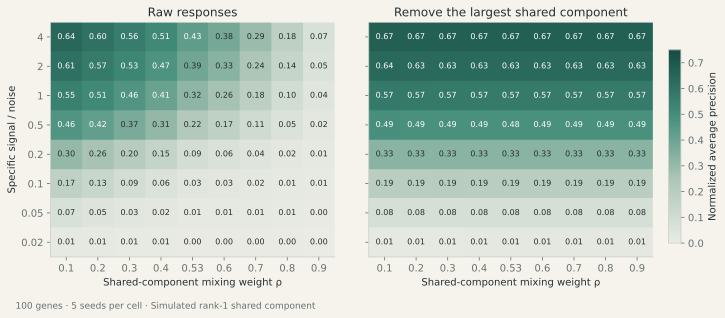
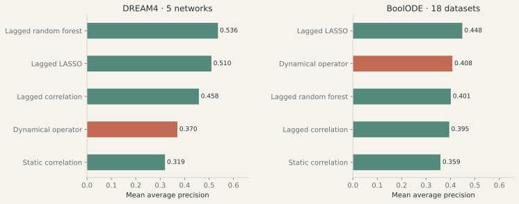

02 · Gene-network recovery
Which connections can be recovered from gene activity?
A gene regulatory network describes which genes influence others. Expression data measures their activity. Genes can respond together or affect each other indirectly, making direct connections hard to identify. Benchmarking frameworks such as BEELINE test inference methods against networks with known generating structure.
A recovery map with two separate controls
A controlled simulation tests when removing shared activity improves connection recovery. It starts with a known network, then mixes its propagated response with a shared component and noise. Varying shared activity and signal-to-noise separately distinguishes a large removable component from a weak underlying signal.

Result. At shared mixing weight 0.7 and signal/noise 2, removing the largest component raises normalized average precision from 0.24 to 0.63. With strong specific signal, recovery after component removal remains similar across a wide range of shared-component weights. As the specific signal weakens, both methods lose recovery.
Benchmarks against established methods
The time-series comparison asks whether a fitted linear prediction rule can match established methods. The dynamical operator maps the current gene-expression profile to the next and uses coefficient sizes as connection scores. It is compared with lagged random forests, LASSO and correlation on the same observations and directed reference edges in simulated DREAM4 and BoolODE networks.
Average precision is higher when true connections appear near the top of the ranking.

Five DREAM4 networks and eighteen BoolODE datasets.
Means across datasets. Fixed configurations; static correlation is a reference comparator. The random forest is a lagged GENIE3-style implementation.
Lagged random forests lead the DREAM4 aggregate (0.536 mean AP); lagged LASSO leads BoolODE (0.448). The candidate dynamical operator scores 0.370 and 0.408 respectively.
From a response to a direct connection
The perturbation study addresses another ambiguity: a large change can arise from a direct connection, a stronger intervention, or an indirect path through other genes. It implements modular response analysis, introduced by Kholodenko et al. (2002), which uses self-responses to account for perturbation strengths.
In 30 simulated linear systems with all 40 genes observed and no measurement noise, the implementation recovers the known direct connections to numerical precision. Adding measurement noise reduced recovery in these controls, especially when genes used different measurement units. When genes are unobserved, an apparent connection can instead summarize an indirect path through a missing gene.
Measured response consistency
The same response analysis was applied to measured CRISPR responses from Replogle et al. (2022). On the RPE1 response block, modular-response edge rankings have split-half correlation 0.115, compared with 0.345 for raw responses. Split-half correlation measures the similarity of the connection rankings obtained from two halves of the data.
Shared-component removal helped in some simulated settings, while established lagged methods led both time-series benchmarks. The ideal response-inversion result did not translate into improved ranking consistency in the measured data.